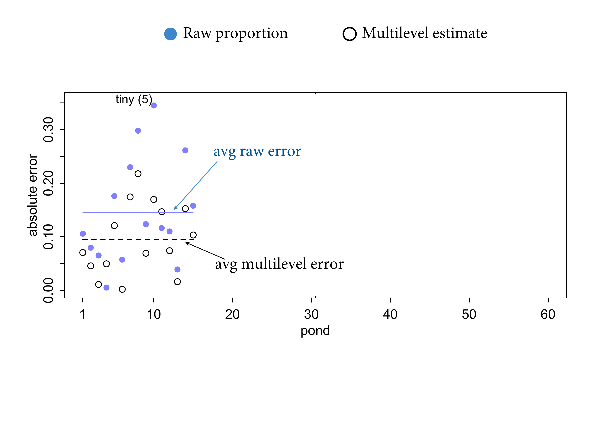
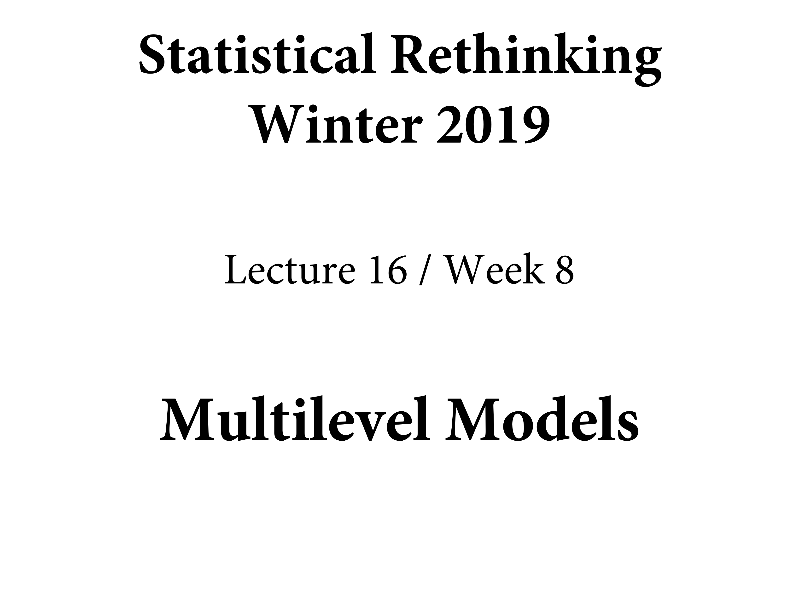

12.2 Varying effects and the underfitting/overfitting trade-off
All of this is really dealing with over/under-fitting. No pooling because there’s no information being excahnged among clusters. How much pooling? Depends on variation among clusters.
13.2.1. The model
Try to back this up with a picture. MLM at the top. Focus on \(\sigma\). If this was the cafes, it’s the variation in wait times.
On the left it has a minimum of 0. If we fix it at 0 or put a really strong prior on it, it converges to the pooling model. All clusters are the same, and it will converge to the grand mean. Exactly one alpha. They’re all there, but all the same.
![On the other extreme, it's infinity. If sigma goes there, you get no pooling. Statistically assuming all tanks are infinteily different from each other. As a vertebrate, as you go from cafe to cafe, you do the pooling. YOur brain won't let you ignore the variation. But a statistical model won't do that unless you tell it to. If you want to program a robot to borrow information across clusters, you can't let $\sigma$ be infinity. The estimate for any particular alpha will be a mix of the data in that tank and all of the other tanks. The mix depends on the variation on the tanks. If there's no variation across tanks, then the whole population is used. If sigma goes to infitnty , you ignore the population.](slides/L15/31.png)
On the other extreme, it’s infinity. If sigma goes there, you get no pooling. Statistically assuming all tanks are infinteily different from each other. As a vertebrate, as you go from cafe to cafe, you do the pooling. YOur brain won’t let you ignore the variation. But a statistical model won’t do that unless you tell it to. If you want to program a robot to borrow information across clusters, you can’t let \(\sigma\) be infinity. The estimate for any particular alpha will be a mix of the data in that tank and all of the other tanks. The mix depends on the variation on the tanks. If there’s no variation across tanks, then the whole population is used. If sigma goes to infitnty , you ignore the population.
In this particular model, you estimate sigma for the data, and it turns out to be this posterior here. Can get an almost Gaussian posterior. And that’s the extreme amount of variation. What does this population look like? Not a real population, but a statistical one.
![The population-generating process is called an ecologist. Those processes generate popualations with real mortality effects. We can draw this statistical population. Combinations of alphas and betes produce lines. Alphas and betas are correlated, which is why you need to draw correlated smaples from the posterior. Now the lines are a distribution of distributions. We don't know the distribution. Let's draw it. We could just draw correlated pairs as densities. On the left is a gaussian distribution of log-odds probability. Why Gaussian? Because we said it was. Most tadpoles survive. But there's a lot of heterogeneity. You can see that in the distribution. Ont he right I've transofrmed to the outcome probability scale. About half of the tanks we get a high survival rate.](slides/L15/33.png)
The population-generating process is called an ecologist. Those processes generate popualations with real mortality effects. We can draw this statistical population. Combinations of alphas and betes produce lines. Alphas and betas are correlated, which is why you need to draw correlated smaples from the posterior. Now the lines are a distribution of distributions. We don’t know the distribution. Let’s draw it. We could just draw correlated pairs as densities. On the left is a gaussian distribution of log-odds probability. Why Gaussian? Because we said it was. Most tadpoles survive. But there’s a lot of heterogeneity. You can see that in the distribution. Ont he right I’ve transofrmed to the outcome probability scale. About half of the tanks we get a high survival rate.
![So I keep asserting that the shrinkage estiamtes are better. Let's demonstrate it. We do better in prediction. WAIC works in theory, predicting the out-of-sample accuracy. Regularisation is good. Simulate a bunch of ponds, 60 of them, with different densities of tadpoles in each of 15 ponds. `true.a` is the true log-oddds survival rate. True because we' ve simulated it. THen simulated surivval events. `s`. Therea re some wipeouts, like pond 5. Then the next two are statsitcal estiamtes. `p.nopool` is the raw fixed effects estiamte. The MLM estimate is `p.partpool`. Then `p.true` is the inverse logit of `true.a`. Now we can assess because we can compare it to the truth.](slides/L15/34.png)
So I keep asserting that the shrinkage estiamtes are better. Let’s demonstrate it. We do better in prediction. WAIC works in theory, predicting the out-of-sample accuracy. Regularisation is good. Simulate a bunch of ponds, 60 of them, with different densities of tadpoles in each of 15 ponds. true.a is the true log-oddds survival rate. True because we’ ve simulated it. THen simulated surivval events. s. Therea re some wipeouts, like pond 5. Then the next two are statsitcal estiamtes. p.nopool is the raw fixed effects estiamte. The MLM estimate is p.partpool. Then p.true is the inverse logit of true.a. Now we can assess because we can compare it to the truth.
13.2.2. Assign values to the parameters
I’ve chosen 60 ponds, with 15 each of initial tadpole density 5, 10, 25, and 35.
Go ahead and inspect the contents of dsim, the simulated data. The first column is the pond index, 1 through 60. The second column is the initial tadpole count in each pond. The third column is the true log-odds survival for each pond.
a_bar <- 1.5
sigma <- 1.5
n_ponds <- 60
set.seed(5005)
dsim <-
tibble(pond = 1:n_ponds,
ni = rep(c(5, 10, 25, 35), each = n_ponds / 4) %>% as.integer(),
true_a = rnorm(n = n_ponds, mean = a_bar, sd = sigma))
head(dsim)## # A tibble: 6 × 3
## pond ni true_a
## <int> <int> <dbl>
## 1 1 5 0.567
## 2 2 5 1.99
## 3 3 5 -0.138
## 4 4 5 1.86
## 5 5 5 3.91
## 6 6 5 1.95# Plot
dsim %>%
mutate(ni = factor(ni)) %>%
ggplot(aes(x = true_a, y = ni)) +
stat_dotsinterval(fill = "orange2", slab_size = 0, .width = .5) +
ggtitle("Log-odds varying by # tadpoles per pond") +
theme(plot.title = element_text(size = 14))
13.2.3. Simulate survivors
Now we’re ready to simulate the binomial survival process. Each pond i has ni potential survivors, and nature flips each tadpole’s coin, so to speak, with probability of survival \(p_i\).
set.seed(5005)
dsim <-
dsim %>%
mutate(si = rbinom(n = n(), prob = inv_logit_scaled(true_a), size = ni))
dsim %>%
DT::datatable(.)13.2.4. Compute the no-pooling estimates
dsim <-
dsim %>%
mutate(p_nopool = si / ni)
dsim %>%
DT::datatable(.)13.2.5. Compute the partial-pooling estimates
b13.3 <-
brms::brm(data = dsim,
family = binomial,
si | trials(ni) ~ 1 + (1 | pond),
prior = c(prior(normal(0, 1.5), class = Intercept),
prior(exponential(1), class = sd)),
iter = 2000, warmup = 1000, chains = 4, cores = 4,
seed = 13,
file = "fits/b13.03")
print(b13.3)## Family: binomial
## Links: mu = logit
## Formula: si | trials(ni) ~ 1 + (1 | pond)
## Data: dsim_tb (Number of observations: 60)
## Samples: 4 chains, each with iter = 2000; warmup = 1000; thin = 1;
## total post-warmup samples = 4000
##
## Group-Level Effects:
## ~pond (Number of levels: 60)
## Estimate Est.Error l-95% CI u-95% CI Rhat Bulk_ESS Tail_ESS
## sd(Intercept) 1.49 0.20 1.14 1.92 1.00 1506 2368
##
## Population-Level Effects:
## Estimate Est.Error l-95% CI u-95% CI Rhat Bulk_ESS Tail_ESS
## Intercept 1.46 0.23 1.03 1.94 1.00 961 1663
##
## Samples were drawn using sampling(NUTS). For each parameter, Bulk_ESS
## and Tail_ESS are effective sample size measures, and Rhat is the potential
## scale reduction factor on split chains (at convergence, Rhat = 1).Take a look at the estimates for \(\bar{\alpha}\) and \(\sigma\).
b13.3$fit## Inference for Stan model: 50bbea81c6f51c3bd01edfc7641dfc55.
## 4 chains, each with iter=2000; warmup=1000; thin=1;
## post-warmup draws per chain=1000, total post-warmup draws=4000.
##
## mean se_mean sd 2.5% 25% 50% 75%
## b_Intercept 1.46 0.01 0.23 1.03 1.31 1.46 1.62
## sd_pond__Intercept 1.49 0.01 0.20 1.14 1.35 1.48 1.62
## r_pond[1,Intercept] 0.09 0.01 0.97 -1.71 -0.57 0.05 0.69
## r_pond[2,Intercept] 0.10 0.01 0.96 -1.66 -0.56 0.04 0.71
## r_pond[3,Intercept] -0.68 0.01 0.84 -2.24 -1.27 -0.70 -0.13
## r_pond[4,Intercept] 1.14 0.01 1.12 -0.86 0.36 1.06 1.86
## r_pond[5,Intercept] 1.14 0.01 1.14 -0.85 0.33 1.06 1.84
## r_pond[6,Intercept] 0.09 0.01 0.96 -1.65 -0.57 0.04 0.71
## r_pond[7,Intercept] 0.09 0.01 0.98 -1.74 -0.59 0.04 0.72
## r_pond[8,Intercept] 0.10 0.01 0.95 -1.62 -0.54 0.06 0.68
## r_pond[9,Intercept] -0.70 0.01 0.85 -2.35 -1.26 -0.71 -0.13
## r_pond[10,Intercept] 0.10 0.01 0.94 -1.65 -0.53 0.04 0.70
## r_pond[11,Intercept] 1.13 0.01 1.12 -0.89 0.35 1.06 1.81
## r_pond[12,Intercept] -1.36 0.01 0.83 -2.97 -1.93 -1.36 -0.81
## r_pond[13,Intercept] 1.14 0.01 1.13 -0.86 0.34 1.08 1.86
## r_pond[14,Intercept] 0.08 0.01 0.95 -1.65 -0.57 0.05 0.70
## r_pond[15,Intercept] 1.12 0.01 1.12 -0.86 0.36 1.04 1.83
## r_pond[16,Intercept] -0.85 0.01 0.63 -2.06 -1.28 -0.85 -0.42
## r_pond[17,Intercept] -1.95 0.01 0.65 -3.26 -2.38 -1.93 -1.52
## r_pond[18,Intercept] -1.21 0.01 0.64 -2.46 -1.65 -1.21 -0.80
## r_pond[19,Intercept] -1.22 0.01 0.65 -2.46 -1.65 -1.22 -0.80
## r_pond[20,Intercept] -0.43 0.01 0.70 -1.74 -0.91 -0.46 0.02
## r_pond[21,Intercept] -1.57 0.01 0.65 -2.85 -1.99 -1.56 -1.12
## r_pond[22,Intercept] 0.66 0.01 0.86 -0.86 0.05 0.60 1.20
## r_pond[23,Intercept] 1.55 0.02 1.00 -0.19 0.83 1.48 2.16
## r_pond[24,Intercept] -0.84 0.01 0.68 -2.13 -1.31 -0.85 -0.40
## r_pond[25,Intercept] 0.06 0.01 0.75 -1.32 -0.47 0.02 0.55
## r_pond[26,Intercept] 0.68 0.01 0.87 -0.86 0.06 0.61 1.22
## r_pond[27,Intercept] 0.06 0.01 0.74 -1.29 -0.46 0.03 0.56
## r_pond[28,Intercept] -0.44 0.01 0.69 -1.77 -0.90 -0.46 0.01
## r_pond[29,Intercept] -0.85 0.01 0.65 -2.07 -1.28 -0.86 -0.43
## r_pond[30,Intercept] -0.45 0.01 0.69 -1.74 -0.93 -0.47 0.00
## r_pond[31,Intercept] 1.41 0.01 0.78 0.03 0.87 1.34 1.90
## r_pond[32,Intercept] 0.55 0.01 0.63 -0.61 0.11 0.53 0.95
## r_pond[33,Intercept] 1.41 0.01 0.78 0.03 0.86 1.37 1.90
## r_pond[34,Intercept] -0.43 0.01 0.49 -1.37 -0.77 -0.43 -0.11
## r_pond[35,Intercept] -0.96 0.01 0.46 -1.83 -1.27 -0.97 -0.65
## r_pond[36,Intercept] 2.10 0.01 0.95 0.46 1.44 2.00 2.66
## r_pond[37,Intercept] -3.37 0.01 0.61 -4.65 -3.76 -3.33 -2.95
## r_pond[38,Intercept] -2.06 0.01 0.46 -2.99 -2.36 -2.05 -1.75
## r_pond[39,Intercept] -0.97 0.01 0.47 -1.90 -1.27 -0.97 -0.65
## r_pond[40,Intercept] 2.10 0.01 0.95 0.47 1.43 2.02 2.66
## r_pond[41,Intercept] 2.11 0.01 0.94 0.55 1.44 2.02 2.67
## r_pond[42,Intercept] 0.55 0.01 0.60 -0.52 0.13 0.52 0.92
## r_pond[43,Intercept] -1.74 0.01 0.46 -2.66 -2.04 -1.73 -1.43
## r_pond[44,Intercept] -0.63 0.01 0.47 -1.49 -0.94 -0.65 -0.32
## r_pond[45,Intercept] -2.63 0.01 0.50 -3.63 -2.95 -2.62 -2.29
## r_pond[46,Intercept] -1.44 0.01 0.40 -2.22 -1.71 -1.44 -1.18
## r_pond[47,Intercept] 2.34 0.01 0.92 0.74 1.69 2.26 2.90
## r_pond[48,Intercept] 2.33 0.01 0.93 0.78 1.67 2.25 2.88
## r_pond[49,Intercept] 0.16 0.01 0.48 -0.75 -0.16 0.14 0.47
## r_pond[50,Intercept] 0.16 0.01 0.49 -0.78 -0.17 0.15 0.48
## r_pond[51,Intercept] 0.15 0.01 0.48 -0.77 -0.17 0.15 0.47
## r_pond[52,Intercept] -1.44 0.01 0.39 -2.24 -1.71 -1.44 -1.17
## r_pond[53,Intercept] 0.16 0.01 0.48 -0.73 -0.17 0.15 0.49
## r_pond[54,Intercept] 2.32 0.01 0.91 0.77 1.67 2.25 2.89
## r_pond[55,Intercept] -0.88 0.01 0.42 -1.70 -1.15 -0.87 -0.60
## r_pond[56,Intercept] 1.70 0.01 0.76 0.36 1.17 1.64 2.16
## r_pond[57,Intercept] -0.76 0.01 0.41 -1.53 -1.03 -0.76 -0.49
## r_pond[58,Intercept] 1.23 0.01 0.66 0.02 0.78 1.17 1.65
## r_pond[59,Intercept] 0.37 0.01 0.52 -0.58 0.01 0.34 0.71
## r_pond[60,Intercept] 1.23 0.01 0.65 0.10 0.77 1.19 1.64
## lp__ -185.86 0.25 7.57 -201.09 -190.96 -185.44 -180.61
## 97.5% n_eff Rhat
## b_Intercept 1.94 948 1
## sd_pond__Intercept 1.92 1480 1
## r_pond[1,Intercept] 2.17 7322 1
## r_pond[2,Intercept] 2.12 6248 1
## r_pond[3,Intercept] 1.00 5687 1
## r_pond[4,Intercept] 3.53 6376 1
## r_pond[5,Intercept] 3.62 6681 1
## r_pond[6,Intercept] 2.09 5908 1
## r_pond[7,Intercept] 2.11 6581 1
## r_pond[8,Intercept] 2.12 6627 1
## r_pond[9,Intercept] 1.01 6139 1
## r_pond[10,Intercept] 2.11 6207 1
## r_pond[11,Intercept] 3.54 6635 1
## r_pond[12,Intercept] 0.22 6388 1
## r_pond[13,Intercept] 3.51 6325 1
## r_pond[14,Intercept] 2.08 6733 1
## r_pond[15,Intercept] 3.54 6781 1
## r_pond[16,Intercept] 0.41 5022 1
## r_pond[17,Intercept] -0.77 4933 1
## r_pond[18,Intercept] 0.06 5232 1
## r_pond[19,Intercept] 0.13 4799 1
## r_pond[20,Intercept] 0.99 5399 1
## r_pond[21,Intercept] -0.34 4858 1
## r_pond[22,Intercept] 2.51 5055 1
## r_pond[23,Intercept] 3.75 4406 1
## r_pond[24,Intercept] 0.53 4207 1
## r_pond[25,Intercept] 1.58 4978 1
## r_pond[26,Intercept] 2.56 5753 1
## r_pond[27,Intercept] 1.63 5016 1
## r_pond[28,Intercept] 0.97 5209 1
## r_pond[29,Intercept] 0.43 4208 1
## r_pond[30,Intercept] 0.97 5670 1
## r_pond[31,Intercept] 3.11 5320 1
## r_pond[32,Intercept] 1.86 3754 1
## r_pond[33,Intercept] 3.06 5328 1
## r_pond[34,Intercept] 0.57 3148 1
## r_pond[35,Intercept] -0.04 2441 1
## r_pond[36,Intercept] 4.25 4792 1
## r_pond[37,Intercept] -2.24 3989 1
## r_pond[38,Intercept] -1.18 3079 1
## r_pond[39,Intercept] -0.05 3260 1
## r_pond[40,Intercept] 4.19 4059 1
## r_pond[41,Intercept] 4.22 4566 1
## r_pond[42,Intercept] 1.83 3807 1
## r_pond[43,Intercept] -0.85 2776 1
## r_pond[44,Intercept] 0.34 2879 1
## r_pond[45,Intercept] -1.71 3504 1
## r_pond[46,Intercept] -0.66 2260 1
## r_pond[47,Intercept] 4.35 5553 1
## r_pond[48,Intercept] 4.38 4558 1
## r_pond[49,Intercept] 1.13 3172 1
## r_pond[50,Intercept] 1.15 2688 1
## r_pond[51,Intercept] 1.14 3165 1
## r_pond[52,Intercept] -0.68 2353 1
## r_pond[53,Intercept] 1.12 2764 1
## r_pond[54,Intercept] 4.38 4731 1
## r_pond[55,Intercept] -0.03 2715 1
## r_pond[56,Intercept] 3.41 5144 1
## r_pond[57,Intercept] 0.06 2612 1
## r_pond[58,Intercept] 2.64 4193 1
## r_pond[59,Intercept] 1.40 3089 1
## r_pond[60,Intercept] 2.60 3791 1
## lp__ -171.64 889 1
##
## Samples were drawn using NUTS(diag_e) at Fri Aug 13 15:58:51 2021.
## For each parameter, n_eff is a crude measure of effective sample size,
## and Rhat is the potential scale reduction factor on split chains (at
## convergence, Rhat=1).Compute the survival proportions and add them to our growing simulation data frame.
# we could have included this step in the block of code below, if we wanted to
p_partpool <-
coef(b13.3)$pond[, , ] %>%
data.frame() %>%
transmute(p_partpool = inv_logit_scaled(Estimate))
dsim <-
dsim %>%
bind_cols(p_partpool) %>%
mutate(p_true = inv_logit_scaled(true_a)) %>%
mutate(nopool_error = abs(p_nopool - p_true),
partpool_error = abs(p_partpool - p_true))
dsim %>%
glimpse()## Rows: 60
## Columns: 9
## $ pond <int> 1, 2, 3, 4, 5, 6, 7, 8, 9, 10, 11, 12, 13, 14, 15, 16, …
## $ ni <int> 5, 5, 5, 5, 5, 5, 5, 5, 5, 5, 5, 5, 5, 5, 5, 10, 10, 10…
## $ true_a <dbl> 0.56673123, 1.99002317, -0.13775688, 1.85676651, 3.9120…
## $ si <int> 4, 4, 3, 5, 5, 4, 4, 4, 3, 4, 5, 2, 5, 4, 5, 6, 3, 5, 5…
## $ p_nopool <dbl> 0.8, 0.8, 0.6, 1.0, 1.0, 0.8, 0.8, 0.8, 0.6, 0.8, 1.0, …
## $ p_partpool <dbl> 0.8256632, 0.8267518, 0.6859881, 0.9313513, 0.9308751, …
## $ p_true <dbl> 0.6380086, 0.8797456, 0.4656151, 0.8649196, 0.9803934, …
## $ nopool_error <dbl> 0.16199142, 0.07974559, 0.13438486, 0.13508039, 0.01960…
## $ partpool_error <dbl> 0.1876546251, 0.0529937565, 0.2203729151, 0.0664317322,…Compare to the true per-pond survival probabilities.
Now plot
dfline <-
dsim %>%
dplyr::select(ni, nopool_error:partpool_error) %>%
tidyr::pivot_longer(-ni) %>%
dplyr::group_by(name, ni) %>%
dplyr::summarise(mean_error = mean(value)) %>%
dplyr::mutate(x = c( 1, 16, 31, 46),
xend = c(15, 30, 45, 60))## `summarise()` has grouped output by 'name'. You can override using the `.groups` argument.dsim %>%
ggplot(aes(x = pond)) +
geom_vline(xintercept = c(15.5, 30.5, 45.4),
color = "white", size = 2/3) +
geom_point(aes(y = nopool_error), color = "orange2") +
geom_point(aes(y = partpool_error), shape = 1) +
geom_segment(data = dfline,
aes(x = x, xend = xend,
y = mean_error, yend = mean_error),
color = rep(c("orange2", "black"), each = 4),
linetype = rep(1:2, each = 4)) +
annotate(geom = "text",
x = c(15 - 7.5, 30 - 7.5, 45 - 7.5, 60 - 7.5), y = .45,
label = c("tiny (5)", "small (10)", "medium (25)", "large (35)")) +
scale_x_continuous(breaks = c(1, 10, 20, 30, 40, 50, 60)) +
labs(title = "Estimate error by model type",
subtitle = "The horizontal axis displays pond number. The vertical axis measures\nthe absolute error in the predicted proportion of survivors, compared to\nthe true value used in the simulation. The higher the point, the worse\nthe estimate. No-pooling shown in orange. Partial pooling shown in black.\nThe orange and dashed black lines show the average error for each kind\nof estimate, across each initial density of tadpoles (pond size).",
y = "absolute error") +
theme(panel.grid.major = element_blank(),
plot.subtitle = element_text(size = 10))
Or quantify the difference in simple summaries:
dsim %>%
dplyr::select(ni, nopool_error:partpool_error) %>%
tidyr::pivot_longer(-ni) %>%
dplyr::group_by(name) %>%
dplyr::summarise(mean_error = mean(value) %>% round(digits = 3),
median_error = median(value) %>% round(digits = 3))## # A tibble: 2 × 3
## name mean_error median_error
## <chr> <dbl> <dbl>
## 1 nopool_error 0.059 0.042
## 2 partpool_error 0.054 0.034Once you’ve compiled m13.3 once, you can use this code to re-simulate ponds and sample from the new posterior, without waiting for the model to compile again:

On the left we have tiny ponds. The blue points are the raw proportions survived. The open points are the partial pooling estimates. The error is the absolute error from the true value. 0 is totally correct. A lot of error here because you’ve only got 5 tadpoles. Hard to estimate the probability of heads if you only flip the coin 5 times. THe blue horizontal bar is the average of the raw estimates, the dashed is for the MLM. They’re not perfect, but they’re better. THis is all shrinkage.

The other tanks. The pattern holds as you go across. The amount of error declines, because we have more data. The difference, the advantage of MLMs, shrinks. But still estimates the popualtion, which is important for prediction. So even when it doesn’t give you bettre predictions, it allows you to make them in the right way because it takes account of populations.
Overthinking::repeating the pond simulation
# Error in unserialize(socklist[[n]]) : error reading from connection
# Simulate new data
a_bar <- 1.5
sigma <- 1.5
n_ponds <- 60
set.seed(1999) # for new data, set a new seed
new_dsim <-
tibble(pond = 1:n_ponds,
ni = rep(c(5, 10, 25, 35), each = n_ponds / 4) %>% as.integer(),
true_a = rnorm(n = n_ponds, mean = a_bar, sd = sigma)) %>%
mutate(si = rbinom(n = n(), prob = inv_logit_scaled(true_a), size = ni)) %>%
mutate(p_nopool = si / ni)
glimpse(new_dsim)
# Fit the new model
b13.3_new <-
update(b13.3,
newdata = new_dsim,
chains = 4, cores = 1,
seed = 13,
file = "fits/b13.03_new")
print(b13.3_new)slides_dir = here::here("docs/slides/L16")